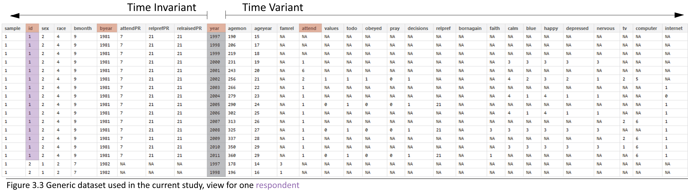
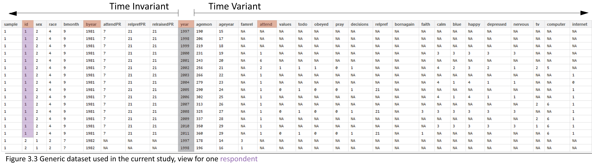
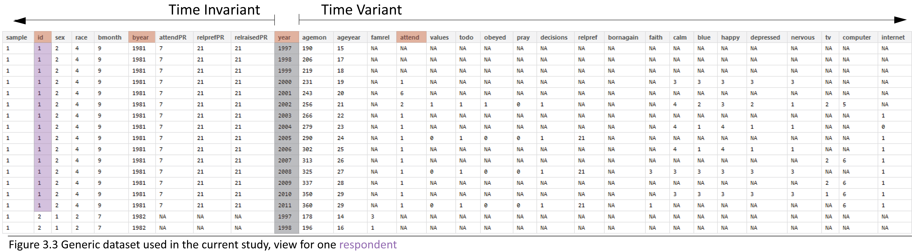

This databox corresponds to the dataset dsL the screenshot of which is given below

This databox corresponds to the dataset dsL the screenshot of which is given below
 This report offers basic statical graphs describing NLSY97 religiosity data. For list of graphs pupulating the interactive databox, see “Descriptives List” report
We load the dataset dsL, which was obtained by the report Derive_dsL_from_Extract and saved as a .rds dataset file, native to R.
# see code in .Rmd file
Initial point of departure - the databox of the selected sample, described in the Methods chapter and located in the Results chapter of the dissertation.
This databox corresponds to the dataset dsL the screenshot of which is given below

Review of the item reference cards shows that initially, all items were recorded on some discrete scale, either counting occasions or assigning an intiger to a category of response. However, in the original dataset they are recorded as either a numerical value or an intiger
str(dsL)
'data.frame': 134760 obs. of 30 variables:
$ sample : int 1 1 1 1 1 1 1 1 1 1 ...
$ id : int 1 1 1 1 1 1 1 1 1 1 ...
$ sex : int 2 2 2 2 2 2 2 2 2 2 ...
$ race : int 4 4 4 4 4 4 4 4 4 4 ...
$ bmonth : int 9 9 9 9 9 9 9 9 9 9 ...
$ byear : int 1981 1981 1981 1981 1981 1981 1981 1981 1981 1981 ...
$ attendPR : int 7 7 7 7 7 7 7 7 7 7 ...
$ relprefPR : int 21 21 21 21 21 21 21 21 21 21 ...
$ relraisedPR: int 21 21 21 21 21 21 21 21 21 21 ...
$ year : int 1997 1998 1999 2000 2001 2002 2003 2004 2005 2006 ...
$ agemon : num 190 206 219 231 243 256 266 279 290 302 ...
$ ageyear : num 15 17 18 19 20 21 22 23 24 25 ...
$ famrel : num NA NA NA NA NA NA NA NA NA NA ...
$ attend : num NA NA NA 1 6 2 1 1 1 1 ...
$ values : num NA NA NA NA NA 1 NA NA 0 NA ...
$ todo : num NA NA NA NA NA 1 NA NA 1 NA ...
$ obeyed : num NA NA NA NA NA 1 NA NA 0 NA ...
$ pray : num NA NA NA NA NA 0 NA NA 0 NA ...
$ decisions : num NA NA NA NA NA 1 NA NA 1 NA ...
$ relpref : num NA NA NA NA NA NA NA NA 21 NA ...
$ bornagain : num NA NA NA NA NA NA NA NA NA NA ...
$ faith : num NA NA NA NA NA NA NA NA NA NA ...
$ calm : num NA NA NA 3 NA 4 NA 4 NA 4 ...
$ blue : num NA NA NA 3 NA 2 NA 1 NA 1 ...
$ happy : num NA NA NA 3 NA 3 NA 4 NA 4 ...
$ depressed : num NA NA NA 3 NA 2 NA 1 NA 1 ...
$ nervous : num NA NA NA 3 NA 1 NA 1 NA 1 ...
$ tv : num NA NA NA NA NA 2 NA NA NA NA ...
$ computer : num NA NA NA NA NA 5 NA NA NA NA ...
$ internet : num NA NA NA NA NA NA 1 0 1 1 ...
Estimations routines such as lm4 or graphing functions such as ggplot sometimes get fussy about passing factors as opposed to integers or number. It's convenient to have quick access to both. Instead of replacing the initial variables with factors, we'll create parallel set of variables. The script LabelingFactorLevels augments the initial dataset dsL with such. The new data set dsLF (ds - dataset, L - in long format, F - with copy of variables as factors) contains both raw and labeled variables.
str(dsLF)
'data.frame': 134760 obs. of 60 variables:
$ sample : int 1 1 1 1 1 1 1 1 1 1 ...
$ id : int 1 1 1 1 1 1 1 1 1 1 ...
$ sex : int 2 2 2 2 2 2 2 2 2 2 ...
$ race : int 4 4 4 4 4 4 4 4 4 4 ...
$ bmonth : int 9 9 9 9 9 9 9 9 9 9 ...
$ byear : int 1981 1981 1981 1981 1981 1981 1981 1981 1981 1981 ...
$ attendPR : int 7 7 7 7 7 7 7 7 7 7 ...
$ relprefPR : int 21 21 21 21 21 21 21 21 21 21 ...
$ relraisedPR : int 21 21 21 21 21 21 21 21 21 21 ...
$ year : int 1997 1998 1999 2000 2001 2002 2003 2004 2005 2006 ...
$ agemon : num 190 206 219 231 243 256 266 279 290 302 ...
$ ageyear : num 15 17 18 19 20 21 22 23 24 25 ...
$ famrel : num NA NA NA NA NA NA NA NA NA NA ...
$ attend : num NA NA NA 1 6 2 1 1 1 1 ...
$ values : num NA NA NA NA NA 1 NA NA 0 NA ...
$ todo : num NA NA NA NA NA 1 NA NA 1 NA ...
$ obeyed : num NA NA NA NA NA 1 NA NA 0 NA ...
$ pray : num NA NA NA NA NA 0 NA NA 0 NA ...
$ decisions : num NA NA NA NA NA 1 NA NA 1 NA ...
$ relpref : num NA NA NA NA NA NA NA NA 21 NA ...
$ bornagain : num NA NA NA NA NA NA NA NA NA NA ...
$ faith : num NA NA NA NA NA NA NA NA NA NA ...
$ calm : num NA NA NA 3 NA 4 NA 4 NA 4 ...
$ blue : num NA NA NA 3 NA 2 NA 1 NA 1 ...
$ happy : num NA NA NA 3 NA 3 NA 4 NA 4 ...
$ depressed : num NA NA NA 3 NA 2 NA 1 NA 1 ...
$ nervous : num NA NA NA 3 NA 1 NA 1 NA 1 ...
$ tv : num NA NA NA NA NA 2 NA NA NA NA ...
$ computer : num NA NA NA NA NA 5 NA NA NA NA ...
$ internet : num NA NA NA NA NA NA 1 0 1 1 ...
$ sampleF : Ord.factor w/ 2 levels "Cross-Sectional"<..: 1 1 1 1 1 1 1 1 1 1 ...
$ idF : Factor w/ 8984 levels "1","2","3","4",..: 1 1 1 1 1 1 1 1 1 1 ...
$ sexF : Ord.factor w/ 3 levels "Male"<"Female"<..: 2 2 2 2 2 2 2 2 2 2 ...
$ raceF : Ord.factor w/ 4 levels "Black"<"Hispanic"<..: NA NA NA NA NA NA NA NA NA NA ...
$ bmonthF : Ord.factor w/ 12 levels "Jan"<"Feb"<"Mar"<..: 9 9 9 9 9 9 9 9 9 9 ...
$ byearF : Factor w/ 5 levels "1980","1981",..: 2 2 2 2 2 2 2 2 2 2 ...
$ attendPRF : Ord.factor w/ 8 levels "Never"<"Once or Twice"<..: 7 7 7 7 7 7 7 7 7 7 ...
$ relprefPRF : Ord.factor w/ 33 levels "Catholic"<"Baptist"<..: 21 21 21 21 21 21 21 21 21 21 ...
$ relraisedPRF: Ord.factor w/ 33 levels "Catholic"<"Baptist"<..: 21 21 21 21 21 21 21 21 21 21 ...
$ yearF : Factor w/ 15 levels "1997","1998",..: 1 2 3 4 5 6 7 8 9 10 ...
$ agemonF : Factor w/ 244 levels "146","147","148",..: 45 61 74 86 98 111 121 134 145 157 ...
$ ageyearF : Factor w/ 21 levels "12","13","14",..: 4 6 7 8 9 10 11 12 13 14 ...
$ famrelF : Factor w/ 8 levels "0","1","2","3",..: NA NA NA NA NA NA NA NA NA NA ...
$ attendF : Ord.factor w/ 8 levels "Never"<"Once or Twice"<..: NA NA NA 1 6 2 1 1 1 1 ...
$ valuesF : Ord.factor w/ 2 levels "FALSE/less Religious"<..: NA NA NA NA NA 2 NA NA 1 NA ...
$ todoF : Ord.factor w/ 2 levels "FALSE/less Religious"<..: NA NA NA NA NA 2 NA NA 2 NA ...
$ obeyedF : Ord.factor w/ 2 levels "FALSE/less Religious"<..: NA NA NA NA NA 2 NA NA 1 NA ...
$ prayF : Ord.factor w/ 2 levels "FALSE/less Religious"<..: NA NA NA NA NA 1 NA NA 1 NA ...
$ decisionsF : Ord.factor w/ 2 levels "FALSE/less Religious"<..: NA NA NA NA NA 2 NA NA 2 NA ...
$ relprefF : Ord.factor w/ 33 levels "Catholic"<"Baptist"<..: NA NA NA NA NA NA NA NA 21 NA ...
$ bornagainF : Ord.factor w/ 2 levels "NO"<"YES": NA NA NA NA NA NA NA NA NA NA ...
$ faithF : Ord.factor w/ 5 levels "Exrtemely"<"Very"<..: NA NA NA NA NA NA NA NA NA NA ...
$ calmF : Ord.factor w/ 4 levels "All of the time"<..: NA NA NA NA NA NA NA NA NA NA ...
$ blueF : Ord.factor w/ 4 levels "All of the time"<..: NA NA NA NA NA NA NA NA NA NA ...
$ happyF : Ord.factor w/ 4 levels "All of the time"<..: NA NA NA NA NA NA NA NA NA NA ...
$ depressedF : Ord.factor w/ 4 levels "All of the time"<..: NA NA NA NA NA NA NA NA NA NA ...
$ nervousF : Ord.factor w/ 4 levels "All of the time"<..: NA NA NA NA NA NA NA NA NA NA ...
$ tvF : Ord.factor w/ 6 levels "less than 2"<..: NA NA NA NA NA 2 NA NA NA NA ...
$ computerF : Ord.factor w/ 6 levels "None"<"less than 1"<..: NA NA NA NA NA 5 NA NA NA NA ...
$ internetF : Ord.factor w/ 2 levels "No"<"Yes": NA NA NA NA NA NA 2 1 2 2 ...
This give a certain flexibiity to assemble needed dataset quickly and have access to factor labels.
selectCols<-c("year","id","byear","attend","attendF") # type in variable name
ds<-dsLF[,selectCols] # select all rows and only columns listed in the object selectCols
print(ds[ds$id==1,]) # print all availible data for respondent with ID number of 1
year id byear attend attendF
1 1997 1 1981 NA <NA>
2 1998 1 1981 NA <NA>
3 1999 1 1981 NA <NA>
4 2000 1 1981 1 Never
5 2001 1 1981 6 About once/week
6 2002 1 1981 2 Once or Twice
7 2003 1 1981 1 Never
8 2004 1 1981 1 Never
9 2005 1 1981 1 Never
10 2006 1 1981 1 Never
11 2007 1 1981 1 Never
12 2008 1 1981 1 Never
13 2009 1 1981 1 Never
14 2010 1 1981 1 Never
15 2011 1 1981 1 Never
Having quick access to factor labels will come especially handy during graph production.
We don't need all the variables at the moment, so let's select only those we need to describe how respondents' church attendance was changing across time. Let's start with picking person's id, wave of measurement, and church attendance
print (dsL[dsL$id==1,c("id","year","attend")])
id year attend
1 1 1997 NA
2 1 1998 NA
3 1 1999 NA
4 1 2000 1
5 1 2001 6
6 1 2002 2
7 1 2003 1
8 1 2004 1
9 1 2005 1
10 1 2006 1
11 1 2007 1
12 1 2008 1
13 1 2009 1
14 1 2010 1
15 1 2011 1
Now, let's add to the selection person's year of birth and age in months at the time of the interview
selectCols<-c("year","id","byear","agemon","attend") # type in variable name
ds<-dsL[,selectCols] # select all rows and only columns listed in the object selectCols
print(ds[ds$id==1,]) # print all availible data for respondent with ID number of 1
year id byear agemon attend
1 1997 1 1981 190 NA
2 1998 1 1981 206 NA
3 1999 1 1981 219 NA
4 2000 1 1981 231 1
5 2001 1 1981 243 6
6 2002 1 1981 256 2
7 2003 1 1981 266 1
8 2004 1 1981 279 1
9 2005 1 1981 290 1
10 2006 1 1981 302 1
11 2007 1 1981 313 1
12 2008 1 1981 325 1
13 2009 1 1981 337 1
14 2010 1 1981 350 1
15 2011 1 1981 360 1
Generally we can select any desired dataset by formula dataset[ condition for rows , condition for columns ]
ds<-dsL[dsL$year %in% c(2000:2011),c('id',"byear","year","attendF","ageyearF","agemon")]
Error: undefined columns selected
print(ds[ds$id==1,])
year id byear agemon attend
1 1997 1 1981 190 NA
2 1998 1 1981 206 NA
3 1999 1 1981 219 NA
4 2000 1 1981 231 1
5 2001 1 1981 243 6
6 2002 1 1981 256 2
7 2003 1 1981 266 1
8 2004 1 1981 279 1
9 2005 1 1981 290 1
10 2006 1 1981 302 1
11 2007 1 1981 313 1
12 2008 1 1981 325 1
13 2009 1 1981 337 1
14 2010 1 1981 350 1
15 2011 1 1981 360 1
source(file.path(pathDir,"UtilityScripts/produceMDandHTML.R"))